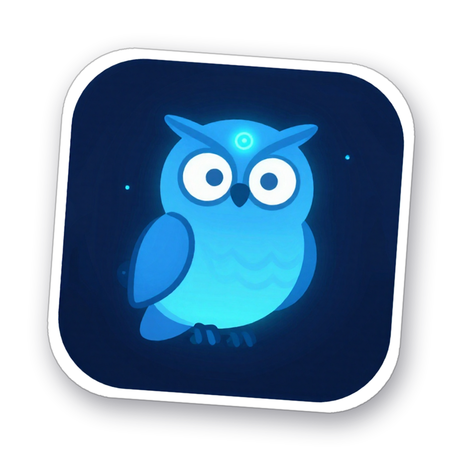

watchmen
Tell it what to watch. It tells you what needs you. Your assistant for work, as a Claude Code plugin: it keeps the list of your merge requests, comments, sessions and todos, checks each one, and stays quiet until something needs you.
The board
┌─ ⚛ watchmen ──────────────────────────┐ │ Needs you (2) │ │ ◆ [mr] !42 frames — 2 new comments │ │ • [todo] Update plan v3 │ │ Moving (1) │ │ • [session] ABC-101 — slice 2/4 │ │ Waiting (1) │ │ • [jira] ABC-103 — backend fields │ └────────────────────────────────────────┘
watchmen is one Claude Code session, the watch, beside your working ones, in a terminal or in the Claude desktop app. Tell it what to keep an eye on in plain words. It keeps the list, checks each item, and comes back to you only when something needs you; the rest it sorts into what is moving and what is waiting. It remembers how you like to hear from it.
| Needs you | You must act or decide. |
| Moving | It advances without you. |
| Waiting | It waits on someone else. |
A day with it
| Start | /watchmen start in a session in your workspace folder, or the ⚛ watchmen · start button in the footer. It reads the last handoff and proposes what to watch from a few read-only lookups: your open pull and merge requests, the reviews asked of you, your tickets in progress. It adds only what you accept, and it survives a restart of Claude Code. |
| Brief | Once a day it speaks first: what needs you, then what moved. Back after an hour, the band says since you looked: 1 need you · 3 moved. |
| Approve | Each item can carry a check, any command whose output tells its state (gh, glab, acli, git). None runs until you approve that exact command: /watchmen approve all, then the hash it shows, typed in a terminal or through Remote Control (not yet in the desktop app). |
| Park | /watchmen park in a session whose work waits on someone: it writes a handoff, the watch puts it on the board with the command to resume it, and you close the session. |
| Take | /watchmen take <id> in any other session: the item arrives as your first message, and the watch marks it as being worked on there. |
| Done | /watchmen done <id> [note] in the watch when an item is finished: it moves to done, with your note if you give one. |
What you see
A ⚛ watchmen button in the footer, with a red count when something needs you, opens the board. A slim band above the prompt gives the counts at a glance. On the desktop the board sits as a small widget: the mascot, the lane counts and the first thing that needs you. When an item lands in needs-you you get a notification; everything else stays in its note.
A charter, not an agent loose on your machine
It works under a charter of what it may do alone, must ask first, and never does, and is told never to write product code or act in your other sessions: it watches, sorts and asks, and hands real tasks to a subagent. What the plugin enforces: the lookups that propose what to watch are fixed and read-only, what they find reaches the watch as quoted data rather than your words, and no check runs before you approve it. It keeps your preferences in a file you own, and never writes secrets or anything about other people there.
In herdr
As a herdr plugin, one key summons the watch beside whatever tab you are on and a second sends it home. Follow mode brings it along as you switch tabs, and the sidebar shows each space's state: ⚛ 2 need you, ⚛ 1 changed, ⚛ quiet.
Install
# in Claude Code /plugin marketplace add pelayomendez/watchmen /plugin install watchmen@pelayomendez-watchmen # then, in a session in your workspace folder /watchmen start
Needs Claude Code 2.1.287 or newer and Node.js 20. A terminal launcher, herdr setup, every command and the safety details are in the README.